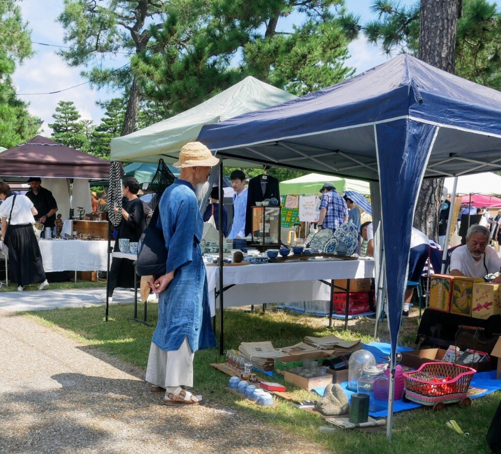

開催予定日
２０２６年
２０２７年
Upcoming market dates
2026
2027
場所 岡崎公園 平安神宮前広場
開催時間 ９ : ００ 〜１６ : ００
雨天・荒天 中止（一時的な小雨の場合は決行）
Venue: Okazaki Park, in front of Heian-jingu Shrine
Hours: 9 am – 4 pm
Rainy or stormy weather: Canceled (held if only temporary light rain)
Lieu : parc Okazaki, juste devant le sanctuaire Heian-jingu
Horaires : de 9h à 16h
Temps pluvieux ou orageux : Annulé (en cas de pluie légère passagère, l’événement aura lieu)
地點：岡崎公園 平安神宮前廣場
舉行時間：9:00〜16:00
雨天或暴风雨天气：取消（如遇临时小雨则举行）

平安蚤の市は、京都市左京区にある平安神宮前の岡崎公園で毎月不定期開催される蚤の市です。１００店舗以上が出店します。
誰かにとって不用になったものを、次の誰かへつなげる場としてスタートしました。リサイクルすることでゴミを減らすことへ繋がり、少しでも環境問題に貢献できるイベントを目指します。
また、世界中の古いものを愛する人たちで賑わう文化交流の場として、京都から日本の文化を発信します。
The Heian Antique Market is held irregularly at Okazaki Park, located in front of Heian Shrine in Kyoto’s Sakyo Ward. More than 100 vendors participate each time.
It began as a place where items no longer needed by someone could find new value in the hands of someone else. By promoting reuse and recycling, the market aims to reduce waste and contribute, even in a small way, to solving environmental issues.
In addition, it serves as a cultural exchange hub bustling with people who love antiques from around the world, sending out messages of Japanese culture from Kyoto to the world.
Le Marché aux puces de Heian se tient de façon irrégulière au parc Okazaki, situé devant le sanctuaire Heian-jingū dans l’arrondissement de Sakyō à Kyoto. Plus de 100 exposants y participent à chaque édition.
Il a commencé comme un lieu où les objets devenus inutiles pour certains pouvaient trouver une nouvelle vie entre les mains d’autres personnes. En favorisant la réutilisation et le recyclage, le marché vise à réduire les déchets et à contribuer, même modestement, à la résolution des problèmes environnementaux.
De plus, il sert de lieu d’échanges culturels animé par des passionnés d’objets anciens venus du monde entier, diffusant la culture japonaise depuis Kyoto vers le reste du monde.
平安跳蚤市场不定期在京都市左京区平安神宫前的冈崎公园举办，届时会有一百多家店铺参加。
这个市集最初的宗旨是为“不再需要的物品”寻找新的主人。通过再利用和循环使用，减少垃圾的产生，从而为环境问题的改善贡献一份力量。
同时，这里也是一个文化交流的场所，聚集了来自世界各地热爱古董与旧物的人们。在这里，京都不仅展现日本文化的魅力，也向全世界传播日本的生活美学。
お問い合わせ
mail : heiannominoichi@gmail.com
TEL : 070-1745-1503（電話に出られない時がございます。その場合はメールにて承ります。）
平安蚤の市実行委員会宛
Contact us
mail : heiannominoichi@gmail.com
TEL : 070-1745-1503 (We may not be able to respond to all phone enquiries. If you have trouble getting through, please email us instead.)
Executive Committee for the Heian Antique Market